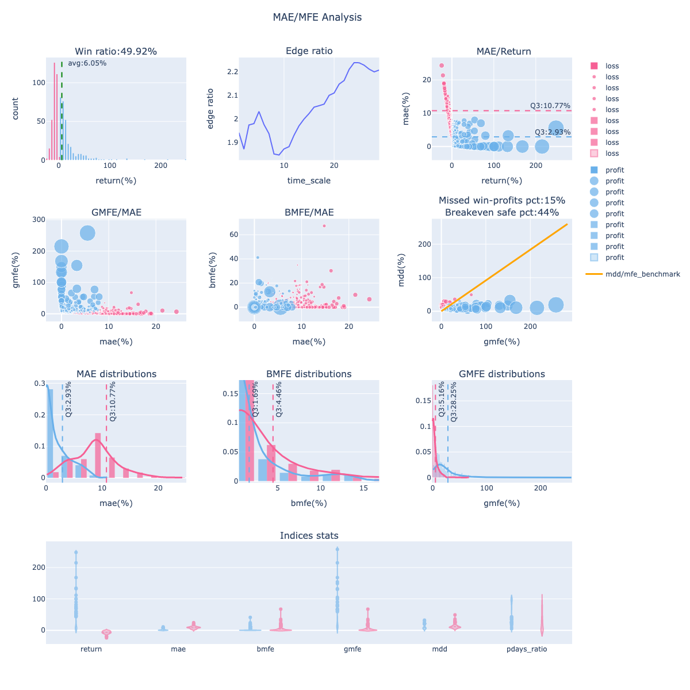
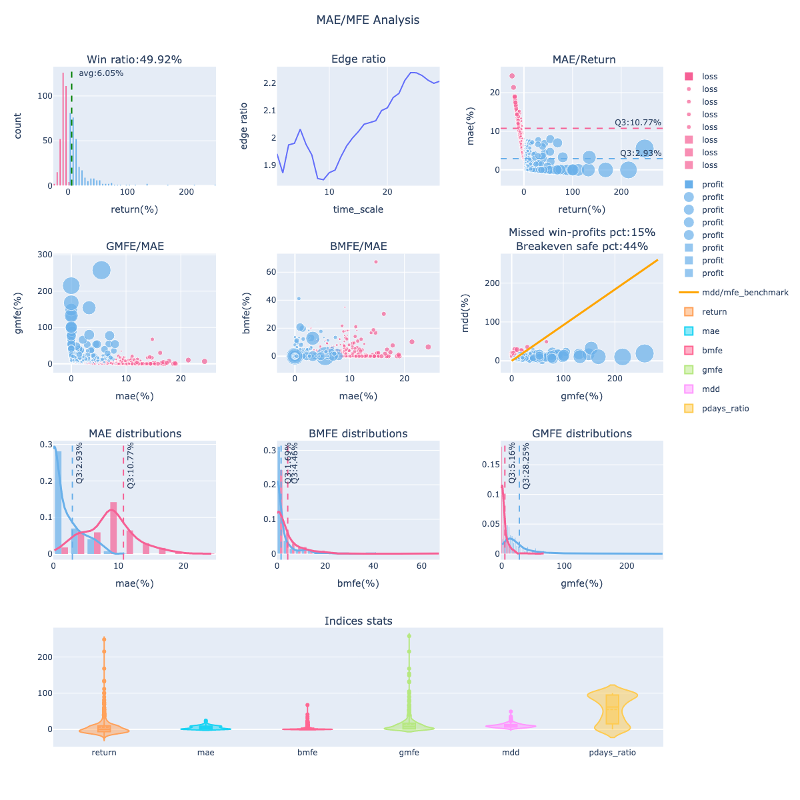

finlab.report
回測報告模組，Report 物件由 sim() 函數產生，包含完整的回測績效資訊。
使用情境
- 查看回測績效（年化報酬、夏普率、最大回撤）
- 分析交易記錄（進出場時間、持有天數、報酬率）
- 視覺化淨值曲線與回撤
- 儲存報告供日後查閱
- 上傳至 FinLab 雲端進行實盤追蹤
- 執行深度分析（流動性、選股能力、持股分布）
快速範例
基礎用法：產生並查看報告
from finlab import data
from finlab.backtest import sim
# 建立策略並回測
close = data.get('price:收盤價')
position = close > close.average(20)
# 產生回測報告
report = sim(position, resample='M')
# 顯示報告（包含視覺化圖表）
report.display()
取得績效指標
# 取得績效統計（DataFrame）
stats = report.get_stats()
print(stats.head())
# 取得績效指標（字典）
metrics = report.get_metrics()
print(f"年化報酬率: {metrics['annual_return']:.2%}")
print(f"夏普率: {metrics['daily_sharpe']:.2f}")
print(f"最大回撤: {metrics['max_drawdown']:.2%}")
查看交易記錄
# 取得所有交易記錄
trades = report.get_trades()
print(f"總交易次數: {len(trades)}")
print(trades.head())
# 篩選獲利交易
profitable_trades = trades[trades['returns'] > 0]
print(f"獲利交易比例: {len(profitable_trades) / len(trades):.1%}")
詳細教學
參考 歷史回測教學，了解： - 完整回測流程 - Report 物件的所有方法 - 績效指標解讀 - 交易記錄分析
API Reference
Report
finlab.analysis.Report
Bases: Report
策略回測基礎報告
Args:
creturn (pd.Series): 策略報酬率時間序列。
position (pd.DataFrame): 策略報酬率時間序列。
fee_ratio (float): 交易手續費率，預設為台灣無打折手續費 0.001425。可視個人使用的券商優惠調整費率。
tax_ratio (float): 交易稅率，預設為台灣普通股一般交易交易稅率 0.003。若交易策略的標的皆為 ETF，記得設成 0.001。
trade_at (str): 選擇回測之還原股價以收盤價或開盤價計算，預設為 close。可選 close 或 open。
next_trading_date (str): 預期下期換股日。
market (str or Market): 可選擇'TWSTOCK', 'CRYPTO'，分別為台股或加密貨幣，
或繼承 finlab.market.Market 開發回測市場類別。
Attributes:
benchmark (pd.Series): 對標報酬率曲線的時間序列，用於 Report.display() 顯示策略報酬率比較標準。
update_date (str): 用於 Report.display() 顯示策略對標的報酬率曲線。
asset_type (str): 資產類別， tw_stock 或 crypto。
last_trading_date (str): 最近產生交易訊號的日期。
display
display_mae_mfe_analysis
顯示波動分析圖組
分析使用說明。
Args:
violinmode (str): violin 型態統計圖樣式，模式分為 group 與 overlay。
預設為 group，group 模式為將交易勝敗分群統計'，overlay 採取全數統計。
mfe_scatter_x (str): 子圖 2-1、2-2 MFE 散點圖的X軸比較項目設定，可選'mae' or 'return'。
**kwargs (dict): 其餘圖表外觀(layout)參數。
Returns:
(plotly.graph_objects.Figure): 波動分析圖組
Examples:
group : 
overlay : 
from_pickle
classmethod
讀取回測報告
| PARAMETER | DESCRIPTION |
|---|---|
file_path
|
檔案路徑
TYPE:
|
| RETURNS | DESCRIPTION |
|---|---|
Report
|
回測報告物件 |
get_metrics
Get the metrics of the backtest result.
| PARAMETER | DESCRIPTION |
|---|---|
stats_
|
回測結果的統計數據。如果為 None，則會計算統計數據。
TYPE:
|
riskfree_rate
|
無風險利率。
TYPE:
|
Returns:
dict: 回測結果的指標:
- backtest (dict): 回測信息。
- startDate (int): 回測開始日期。
- endDate (int): 回測結束日期。
- version (str): 回測版本。
- feeRatio (float): 手續費比率。
- taxRatio (float): 稅收比率。
- tradeAt (str): 交易時間。
- market (str): 市場。
- freq (str): 頻率。
- profitability (dict): 盈利指標。
- annualReturn (float): 年回報率。
- alpha (float): 阿爾法值。
- beta (float): 貝塔值。
- avgNStock (float): 平均股票數量。
- maxNStock (float): 最大股票數量。
- risk (dict): 風險指標。
- maxDrawdown (float): 最大回撤。
- avgDrawdown (float): 平均回撤。
- avgDrawdownDays (float): 平均回撤天數。
- valueAtRisk (float): 在險價值。
- cvalueAtRisk (float): 條件在險價值。
- ratio (dict): 比率指標。
- sharpeRatio (float): 夏普比率。
- sortinoRatio (float): 索提諾比率。
- calmarRatio (float): 卡爾瑪比率。
- volatility (float): 波動率。
- profitFactor (float): 利潤因子。
- tailRatio (float): 尾比率。
- winrate (dict): 勝率指標。
- winRate (float): 勝率。
- m12WinRate (float): 12個月勝率。
- expectancy (float): 期望值。
- mae (float): 最大不利偏離。
- mfe (float): 最大有利偏離。
- liquidity (dict): 流動性指標。
- capacity (float): 容量。
- disposalStockRatio (float): 處置股票比率。
- warningStockRatio (float): 警告股票比率。
- fullDeliveryStockRatio (float): 完全交割股票比率。
get_stats
取得策略統計數據 取得數據如：年化報酬、勝率、夏普率、索提諾比率、最大回檔、近期各年月報酬率統計、alpha_beta... Args: resample (str): 報酬率檢測週期，其他常用數值為 W、 M 、Q（每週、每月、每季換股）。 riskfree_rate (float): 無風險利率，與夏普率計算有關。 Returns: (dict): 策略指標數據
get_trades
取得回測逐筆交易紀錄
| RETURNS | DESCRIPTION |
|---|---|
DataFrame
|
交易紀錄，欄位包含：
|
run_analysis
執行策略分析外掛模組
Args:
analysis (str or object): finlab.analysis內的分析模組名稱，ex:'liquidityAnalysis'。
display (bool): 是否顯示模組分析圖表。
**kwargs (mapping, optional): 分析模組參數調整。
Returns:
(pd.DataFrame or plotly.graph_objects.Figure): 分析結果
to_terminal
在終端顯示累積報酬圖表與回撤
| PARAMETER | DESCRIPTION |
|---|---|
height
|
圖表高度（行數），預設 12
DEFAULT:
|
width
|
圖表寬度（資料點數），預設 80
DEFAULT:
|
show_benchmark
|
是否顯示對照基準，預設 True
DEFAULT:
|
show_drawdown
|
是否顯示回撤圖，預設 True
DEFAULT:
|
Examples:
Report 物件主要方法：
| 方法 | 說明 | 常用程度 |
|---|---|---|
display() |
顯示完整報告（含視覺化圖表） | ⭐⭐⭐⭐⭐ |
get_stats() |
取得績效統計（DataFrame） | ⭐⭐⭐⭐⭐ |
get_metrics() |
取得績效指標（字典） | ⭐⭐⭐⭐⭐ |
get_trades() |
取得交易記錄（DataFrame） | ⭐⭐⭐⭐⭐ |
get_mae_mfe() |
取得最大不利/有利偏移 | ⭐⭐⭐⭐ |
upload() |
上傳至 FinLab 雲端 | ⭐⭐⭐ |
run_analysis() |
執行深度分析模組 | ⭐⭐⭐ |
to_pickle() |
儲存報告為檔案 | ⭐⭐ |
from_pickle() |
從檔案載入報告 | ⭐⭐ |
display()
顯示完整回測報告，包含視覺化圖表與績效指標。
使用範例：
# 基礎用法
report.display()
# 回傳 plotly figure 物件供進一步客製化
fig = report.display(return_fig=True)
fig.update_layout(title='我的策略回測')
fig.show()
顯示內容： - 淨值曲線（策略 vs 基準） - 回撤曲線 - 績效指標表格（年化報酬、夏普率、最大回撤等）
get_stats()
取得時間序列的績效統計資料。
使用範例：
# 取得每日績效統計
stats = report.get_stats(resample='1d')
print(stats.head())
# 取得每月績效統計
monthly_stats = report.get_stats(resample='1M')
print(monthly_stats.tail(12)) # 查看最近 12 個月
# 取得每年績效統計
yearly_stats = report.get_stats(resample='1Y')
print(yearly_stats)
# 查看特定欄位
print(f"累積報酬: {stats['acc_returns'].iloc[-1]:.2%}")
print(f"最大回撤: {stats['drawdown'].min():.2%}")
回傳 DataFrame 欄位：
- returns: 單期報酬率
- acc_returns: 累積報酬率
- drawdown: 回撤（從高點的跌幅）
- volatility: 波動率
- sharpe: 夏普率
- benchmark_returns: 基準報酬率（如有）
get_metrics()
取得整體績效指標（單一數值）。
使用範例：
# 取得績效指標
metrics = report.get_metrics()
# 常用指標
print(f"年化報酬率: {metrics['annual_return']:.2%}")
print(f"夏普率: {metrics['daily_sharpe']:.2f}")
print(f"最大回撤: {metrics['max_drawdown']:.2%}")
print(f"勝率: {metrics['win_rate']:.2%}")
print(f"總交易次數: {metrics['total_trades']}")
# 查看所有指標
for key, value in metrics.items():
print(f"{key}: {value}")
主要指標說明：
| 指標 | 說明 | 理想值 |
|---|---|---|
annual_return |
年化報酬率 | > 10% |
daily_sharpe |
夏普率（日頻計算） | > 1.0 |
max_drawdown |
最大回撤 | < 20% |
win_rate |
勝率（獲利交易比例） | > 50% |
total_trades |
總交易次數 | - |
avg_holding_period |
平均持有天數 | - |
profit_factor |
獲利因子（總獲利/總虧損） | > 1.5 |
get_trades()
取得所有交易記錄的詳細資訊。
使用範例：
# 取得交易記錄
trades = report.get_trades()
# 查看交易記錄結構
print(trades.head())
print(trades.columns)
# 分析交易表現
print(f"總交易次數: {len(trades)}")
print(f"平均報酬率: {trades['returns'].mean():.2%}")
print(f"勝率: {(trades['returns'] > 0).mean():.2%}")
# 篩選大賺或大賠的交易
big_wins = trades[trades['returns'] > 0.2] # 報酬 > 20%
big_losses = trades[trades['returns'] < -0.1] # 虧損 > 10%
# 按股票統計
trades_by_stock = trades.groupby('stock_id')['returns'].agg(['count', 'mean'])
print(trades_by_stock.sort_values('mean', ascending=False).head())
DataFrame 欄位：
- stock_id: 股票代號
- entry_date: 進場日期
- exit_date: 出場日期
- entry_price: 進場價格
- exit_price: 出場價格
- returns: 報酬率
- holding_period: 持有天數
- position_size: 持倉權重
get_mae_mfe()
取得最大不利偏移（MAE）與最大有利偏移（MFE）分析。
使用範例：
# 取得 MAE/MFE 資料
mae_mfe = report.get_mae_mfe()
# 分析風險與機會
print(f"平均 MAE: {mae_mfe['mae'].mean():.2%}") # 平均最大未實現虧損
print(f"平均 MFE: {mae_mfe['mfe'].mean():.2%}") # 平均最大未實現獲利
# 視覺化 MAE/MFE 分布
report.display_mae_mfe_analysis()
應用場景： - 設定停損點：觀察 MAE 分布，決定合理的停損幅度 - 設定停利點：觀察 MFE 分布，決定合理的停利幅度 - 優化進出場：若 MFE 大但最終報酬小，表示停利過晚
MAE/MFE 解讀
- MAE (Maximum Adverse Excursion): 持倉期間的最大未實現虧損
- MFE (Maximum Favorable Excursion): 持倉期間的最大未實現獲利
- 理想情況：MFE 大、MAE 小，表示進場時機佳
upload()
上傳回測報告至 FinLab 雲端，供實盤追蹤使用。
使用範例：
上傳前提
- 需登入 FinLab 帳號（
finlab.login()） - 需為 VIP 會員
- 上傳後可用於實盤下單、績效追蹤
run_analysis()
執行深度分析模組。
使用範例：
from finlab.analysis import (
LiquidityAnalysis,
SelectionAbilityAnalysis,
PositionDistributionAnalysis
)
# 流動性分析
report.run_analysis(LiquidityAnalysis())
# 選股能力分析
report.run_analysis(SelectionAbilityAnalysis())
# 持股分布分析
report.run_analysis(PositionDistributionAnalysis())
詳細說明請參考 策略分析模組。
to_pickle() / from_pickle()
儲存與載入報告。
使用範例：
# 儲存報告
report.to_pickle('my_strategy_report.pkl')
# 載入報告
from finlab.analysis import Report
loaded_report = Report.from_pickle('my_strategy_report.pkl')
loaded_report.display()
使用時機
- 回測需要很長時間，想保存結果
- 需要對比不同時期的回測報告
- 與他人分享回測結果
常見問題
Q: 如何對比多個策略的績效？
# 方法 1：使用 get_metrics() 對比
report1 = sim(position1, resample='M')
report2 = sim(position2, resample='M')
metrics1 = report1.get_metrics()
metrics2 = report2.get_metrics()
import pandas as pd
comparison = pd.DataFrame({
'策略 A': metrics1,
'策略 B': metrics2
})
print(comparison[['annual_return', 'daily_sharpe', 'max_drawdown']])
# 方法 2：使用 Portfolio 物件
from finlab.portfolio import Portfolio
portfolio = Portfolio({
'策略 A': (report1, 0.5),
'策略 B': (report2, 0.5)
})
portfolio_report = portfolio.create_report()
portfolio_report.display()
Q: 如何匯出淨值曲線數據？
# 取得淨值曲線
stats = report.get_stats()
equity_curve = stats['acc_returns']
# 匯出為 CSV
equity_curve.to_csv('equity_curve.csv')
# 或匯出完整統計
stats.to_csv('full_stats.csv')
Q: 如何篩選特定期間的績效？
# 取得完整統計
stats = report.get_stats()
# 篩選 2023 年的績效
stats_2023 = stats.loc['2023-01-01':'2023-12-31']
# 計算該期間的報酬率
period_return = (stats_2023['acc_returns'].iloc[-1] /
stats_2023['acc_returns'].iloc[0]) - 1
print(f"2023 年報酬率: {period_return:.2%}")
Q: 為什麼我的報告顯示不出來？
# 原因 1：忘記呼叫 .display()
report # ❌ 不會顯示
report.display() # ✅ 正確
# 原因 2：Jupyter Notebook 環境問題
# 在 notebook 開頭加入：
%matplotlib inline
# 原因 3：資料為空（無任何交易）
trades = report.get_trades()
if len(trades) == 0:
print("策略無任何交易記錄，請檢查進場條件")
Q: 如何調整報告的視覺化樣式？
# 取得 plotly figure 物件
fig = report.display(return_fig=True)
# 修改標題
fig.update_layout(title='我的策略回測報告')
# 修改顏色
fig.update_traces(line_color='blue', selector=dict(name='策略'))
# 調整圖表大小
fig.update_layout(width=1200, height=600)
# 顯示
fig.show()